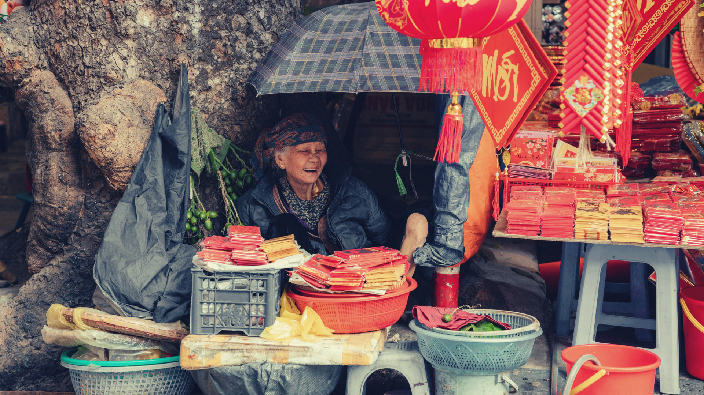
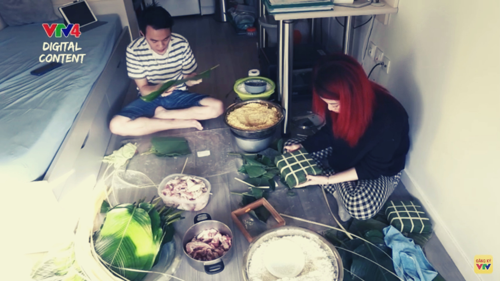
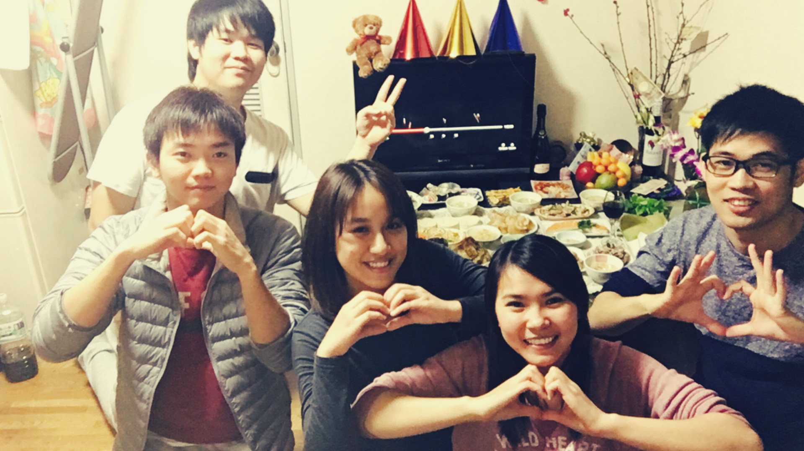

A VERY "PECULIAR" TET OF VIETNAMESE EXPATRIATED STUDENTS
Lạt -
Wednesday, date 15/12/2021 7:00 GMT+7Accepting loss of comforts does seem to be part of studying overseas, perhaps one of the most significant trade-off for expatriated students is the times spent with their family celebrating Tet. You must be wondering whether they are still sharing Tet holiday over there, right? Absolutely! In the West, they can still find banh chung, but not the one wrapped by father's hands. In the West, they can watch Tao Quan too, but watching it at 8 a.m and hurry running off to school. Nevertheless, do not feel moody or think they are alone because there are still friends around them to share and confide in at the year-end parties with all kinds of Vietnamese dishes as well as gather around to reminisce the old Tet's memories and sing along to some classics to welcome the new year...
Drizzly day accompanied by cold, harsh winds blowing through student's cold hands or making their cheeks blushed. When the year is slowly coming to an end, people tend to reminisce about so many things that happened in a year. Only a few more days till the new year comes, the feeling of longing for something as well as waiting for things to come is a sacred moment that cannot be put into words. Those who are staying in their homeland must be very busy these days. But, for those expatriated students who are currently far away from home, living and working in a totally different country, do they have the same feelings as those who are here?

Putting aside all of our excited feelings, those who are currently international students must feel the opposite. Being able to fly back to their hometown is a significant thing for students who have the conditions. To be reunited with families and friends, hugging their loved ones has put bright smiles on their faces as well as tears of longing. When we picture those scenarios in our minds, we might imagine a completed family.
The distance between here and home is too far, mom...
Contrasting with that scene are the sad and touching emotions of those who do not have financial support to be able to return to reunite with their families, a nostalgia covering them. During this time, homesickness is much more intense. Simply remembering the New Year's smells, the typical smell of Vietnamese New Year holiday, is the scent of Chung cake, the smell of coriander leaves spreading from family to family across the streets and everywhere.
Tet is an important occasion for the whole family to gather around welcoming a new year to come. The joy of classical spring music, the frost and the grief of an old year aroused a mix of emotions.. From the past until now, Tet has always been a special occasion for families, according to our elders, who often say: “No matter how angry we are with each other, the New Year will erase them all, sip tea, eat a piece of cookie, and then leave behind the old year”.
What everyone awaits on New Year's day is being reunited with family, sharing a year-end meal together, and experiencing the moment when the old year gives way to the new year. But seemingly simple things like that are just impossible for many young people living and studying abroad. Having to experience the feeling of being thousands of kilometers away from family to appreciate the value of reunion, especially on important occasions like the Lunar New Year.
Another year is about to pass and another New Year is coming. Especially for those who are far away from home, returning to their families on the last day of the year to gather together to prepare for the exciting New Year is probably the most anticipated thing that everyone tries to do.
But for international students, they do not have such luck. Geographic distance, upcoming semester exams, unfinished works and many other unnamed concerns are always the reasons for their absence from home every Tet holiday.
Our editor team of LAT magazine was very fortunate to have the opportunity to interview Ms. Nguyen Thi Thao Phuong - an international student in faraway Germany to ask her about what it is like to live here as well as her feelings when going through many Tet holidays alone, not being able to gather with friends and relatives.
(The Interview segment)
- First of all, on behalf of the editorial board of LAT newspaper, I would like to thank you for being here to have a conversation with us as well as share some of the experiences you have had while traveling. study abroad for LAT's readers - young people who will and are intending to study abroad in the future. Can you tell me how you spent the Lunar New Year here years ago and do you still remember how you felt at that time?
“That day is the 30th day of the Lunar New Year in Vietnam. It's cold here. It's cold in the winter, but the winter sky is gloomy and gloomy. I like the smell of the early morning, the smell of the cool air after each snow melt, especially when there is a light breeze on my face. I feel so high and today's New Year is still a normal day for me. Nothing special. Still the familiar Ludwigsburg station, but every day I arrive on time to the place where I work and then catch the train home.
I remember the first day that I went to Germany that year when I was 19 and a half years old, seeing everything strange, strange stations, strange train stations, strange faces of westerners. I don't know how to buy train tickets, I don't know how to ask for directions but I've gone to Europe”

- I also understand that the first time we leave the arms of our human parents, we also give birth to a little bit of homesickness but also curiosity and interest in the world outside, right? But, after you've lived in a foreign country for a while, do you remember the times when you celebrated Tet in Vietnam with your family?
“It's very crowded in Vietnam these days, isn't it, guys,when I'm at home, I'm cleaning the house right now. For the past few years, due to the COVID epidemic, I was stuck here and couldn't go home. Suddenly, I remember something like a print on the night of the 30th Tet about 10 years ago. At that time, I was in middle school and after receiving New Year's Eve and accepting lucky money, I finished at my father's company. I remember at that time when I was a tiny child, sitting in the back of the first yellow Lead car, my father went to the house near the house to burn incense and then went to my grandfather's house to wish Tet. That New Year's Eve it was drizzling and I remember my dad told me a sentence like this: “Birds have a human nest with cardboard”. Trees have roots and then give birth, branches give birth, go around telling them that you know this and then go home. And that saying of my father has followed me through all the years I have lived in Europe until now”.
- After hearing your uncle's statement, I also feel like I haven't had time to speak with my family in a long time. When I go back to the first time I went to Hanoi to study, I constantly remember my parents' words of caution. I also know that there are many large holidays in Germany at the end of this year; is the environment lively and cheerful, and is it also believed to ease some of the loneliness when living here?
"Every day, I get off the train at the main station and stroll through the city center, which is the busiest street here, but it has been cold and deserted for over three months now owing to the outbreak." There is a small corner in the city where but every afternoon I pass by because I have to pass here to go home.
Normally, if I am unable to return to Vietnam on New Year's Day in order to be in Germany, I will buy flowers to display and clean the house to create a pleasant mood. Alternatively, I could join the student union and meet up with my pals to eat banh chung and banh tet, but all activities are prohibited this year. I'm not allowed to meet more than one person or travel more than 15 kilometers. That's why I didn't do anything today."
- Thank you for taking the time to share your thoughts with us today. Indeed, when the year draws to a close, we often reflect on our accomplishments and make plans for the coming new year, right? So, do you have any advice for readers of "Lat" Magazine, particularly young people who wish to study abroad?
"Looking back over the previous year, I've accomplished a lot, visited a lot of places, and made a lot of friends." And, honestly, haven't we taken on too much work in the last year? Many people have told me that you arranged everything from AZ, even a year ago to study overseas, but that all of your plans and calculations broke apart before you even came. You will not be able to study abroad today. But, if we wait another year till the outbreak is ended, there's a chance we'll run into each other in Europe, right? Whatever happens, I wish you all good health, optimism, and confidence."
- I know it's a little early to wish you a happy new year, more success in your job and life, and the success of all your future goals, but our editorial team wishes you a happy new year, more success in your work and life, and the success of all your future ambitions. Okay, thank you once more.
I feel a positive spirit circulating after the interview with Phuong ended; loneliness, no matter what the scenario, would make a person mature and stronger. Birds have nests, people have cardboard, and Vietnamese people are confident that they are at home, even if they reach out to the vast ocean. Take some time for yourself (especially international students in other countries), lay back, close your eyes, and envision the places that offer you the greatest joy.
International students' lives are a sequence of days counting down, with them going to school in the mornings, working on time in the afternoons, and sleeping off the rest of the unfinished reports at night. The feeling of homesickness grows stronger as Tet approaches; tears seem to pour, but all they know is how to stop them so that the family can have more peace of mind.
Tet is a very important and unique occasion. From when he was a child, standing by his side watching his parents prepare Tet, through growing up with his family to prepare for the new year, Tet is with each person from childhood to adulthood. When it comes to Tet, each moment has its own thrill that gets us enthusiastic and emotional.
Tet represents the days of getting up early with the family to go to the flower market, witnessing the simple joy and happiness on his father's face as he selects a suitable peach branch, and seeing his mother busy preparing the afternoon dinner. Tet. It's also a warm mood when people join together to watch Tao Quan or visit relatives to wish them a happy New Year.
Walking slowly down a country road in the springtime, touching the ground and sky, and carrying a camera that is always ready to catch the best moments of the year's first day. So today, distant from home, international students are experiencing the terrible sense of the Tet holiday without family, without lovely items, and with exceedingly simple habits.
People can chat and see one other's faces every day thanks to today's modern technology, even if they are thousands of miles apart. People, on the other side, are very "greedy" because they still want to purchase one more item that allows us to stay far away while still touching the mother's "ginger" hand, helping her clean the house, and helping her prepare. meals for the next reunion social affair…
Those ordinary things, which they may not have appreciated while they were at home, have now become a luxury, but it is possible that the New Year away from home has taught them a lot. Every Tet holiday, it teaches them to appreciate the moments of fun with family and loved ones, as well as to cherish the traditional cultural values of their homeland, which motivates them to attempt in other nations.
Tet is approaching, and apricot blooms and peach blossoms are flowering in the streets. Every child far from home appears to have a flower budding in his heart, with the hope that this New Year he will be back with his family, in the warm embrace of his parents, and having fun with his family. On a Spring day, friends are observing the streets…
Let Tet still be as beautiful as it has always been…
When they leave their homeland to lead an independent life themselves in a foreign country, students must prepare for everything, including celebrating Tet holiday away from home. But they will not be alone because there are always new friends around who are always ready to create a wonderful Tet. When Tet comes, Vietnamese students will gather together to cook a meal, tell each other about their stories, and everyone will decorate and cook traditional Vietnamese Tet dishes. Vietnamese international students will still go to school and work as usual, but will choose the day closest to the Lunar New Year to meet and share, which is the most fun and most crowded day of the year.
When Tet is near, our friends in Vietnam all shared their preparation moments with their family. Some do the cleaning, some complete their own banh chung,... Overseas students might be a little bit heartbroken when they are away from home on such an occasion. So to ease the homesick feeling, the Korean student’s community decides to celebrate the event together. They visit Vietnamese’s market to collect the necessary ingredients to create a table full of Vietnamese traditional cuisine. They will eat, have a good time together and wait until the year’s transition. For the fellow students who are far from home, they are treated as family members.
Traditional dishes such as silk rolls, spring rolls, and banh chung are still served though the taste can not be as delicious as back home since the ingredients in Korea are difficult to find as well as expensive. Nevertheless, everyone is delighted as they have friends to soften the homesickness and confide with each other.
Meanwhile, they also spend time cleaning up their rooms, decorating with small items and calling home on New Year's Eve to celebrate the new year with their families. Looking at the members laughing and joking through the phone screen, sending New Year wishes to the other half of the hemisphere is always a moment that makes young people touched, remember forever. Distance at that time also gradually became meaningless.
For overseas students, this year is likely to be a Tet celebration away from home. Although sad and lonely, there is still hope that individuals far away will share the problems of life and work together to create a warm New Year in a faraway nation to work for a greater goal than mastering knowledge and become those who take the opportunity to shine and succeed...
Due to Covid-19, this year is definitely a special year to celebrate Tet away from home for international students who have confided and shared their hearts with reporters. Overcoming all sadness and loneliness, hope that people who are far from home will share the difficulties in life, together create a warm Tet in a foreign land to work towards a bigger goal than understanding knowledge and become those who seize the opportunity to shine and succeed… Tet is coming in slowly with the hope that the epidemic will be controlled so that life will return to normal soon.
Tet of Vietnamese students is gently passing along with congratulating, comforting and patting each other. Despite the absence of family, Vietnamese international students always motivate themselves to get over and reach a better new year of study and a happier life. Putting all these fleeting emotions aside, they continue to deal with all the other issues of making their way for life.